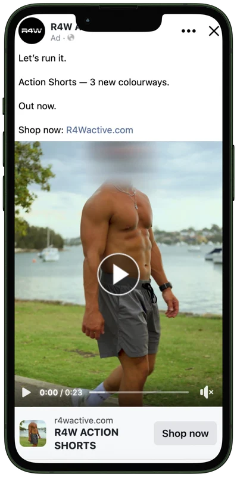
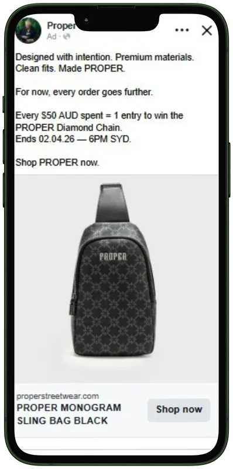
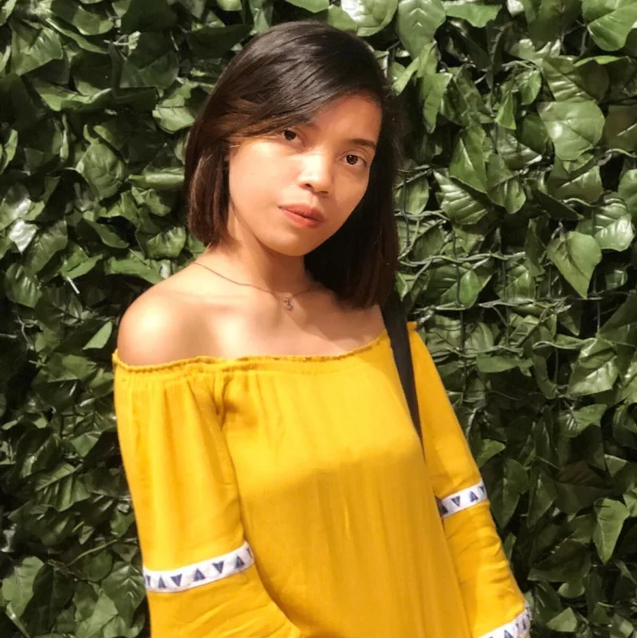

Purchase volume from a broad audience
The broad sales campaign reached new audiences during a product drop. My work included campaign setup, audience strategy, budget management and ongoing optimisation.
161Purchases
4.69×ROAS
$52.18CPA
I help growing ecommerce brands audit underperforming campaigns, run focused creative tests and turn performance data into clear next decisions.
I’m Lailyn Verdejo. My work spans Meta Ads, Google Ads, ecommerce and analytics.
These examples show different campaign goals. I look at the result, what the campaign was built to do and the decision it supports.
The broad sales campaign reached new audiences during a product drop. My work included campaign setup, audience strategy, budget management and ongoing optimisation.
Remarketing focused on visitors, carts and checkout users, with recent purchasers excluded. My work included audience strategy, budget focus, creative direction and optimisation.
Optimisation work focused on purchase goals, higher-intent keywords, negative keywords and ad relevance.
Broad targeting drove more purchase volume; remarketing reported a lower CPA and higher ROAS. I assess them against their different roles rather than treating one as a replacement for the other.
Figures are platform-reported campaign outcomes. ROAS and conversion value do not establish contribution profit or prove that one change caused the result.
Short case notes on the problem, my role and the actions taken. They replace claims of an unmeasured before-and-after improvement.
Broad sales and remarketing campaigns
Build sales volume while converting high-intent visitors and cart users more efficiently.
Campaign setup, audience targeting, budget management, monitoring, optimisation and performance analysis. I also supported creative testing and campaign assets.
Used broad sales targeting for reach and purchase volume. For remarketing, grouped recent website visitors, add-to-cart and checkout audiences, included engaged social users, excluded recent purchasers and used product-focused messaging.
Broad: 161 purchases, 4.69× ROAS, $52.18 CPA. Remarketing: 6.34× ROAS, $43.59 CPA. The next check is whether remarketing frequency and customer acquisition quality remain healthy as spend changes.
Ecommerce · January–April 2026
Mixed conversion goals and lower-intent keywords made it harder to align bidding with purchase value.
Campaign analysis and optimisation, including conversion goal review, keyword refinement and ad asset improvements.
Shifted optimisation toward purchases, paused non-converting keywords, added negatives and higher-intent terms, and improved ad relevance and assets.
A$10,605.47 spend, A$70,265.24 conversion value and 6.6× ROAS. The account also recorded 4,467 total conversions; that total is not presented as a purchase count.
My work moves from diagnosis to a focused test plan, then to campaign decisions backed by performance data. A first engagement can include:
Review tracking, account structure, audience, creative and the path to purchase. Receive prioritised findings.
Turn the findings into a test plan, then build campaigns with clear goals, naming and creative questions.
Review results regularly and get concise recommendations on what to refine, pause or scale.
These examples show the kind of paid social assets I supported. My contribution included selecting suitable imagery and video, writing brand-aligned copy, checking consistency and supporting campaign launch and monitoring.
The results above are campaign-level outcomes; they are not attributed to either individual ad shown here.



I bring 5+ years of digital advertising experience across campaign execution, quality assurance, analysis and reporting. My recent hands-on Meta work has focused on ecommerce campaign strategy, creative testing, audience development and optimisation.
Experience with Google Ads, SEO and ecommerce helps me look beyond platform metrics when deciding what an account needs next.
Share what you sell, what you have tried and the main decision you need to make. I’ll be glad to hear about it.